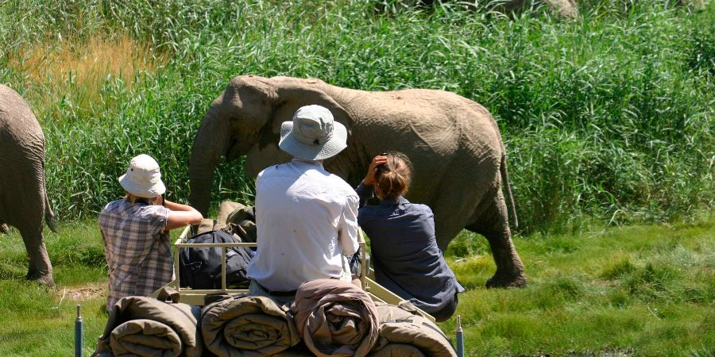
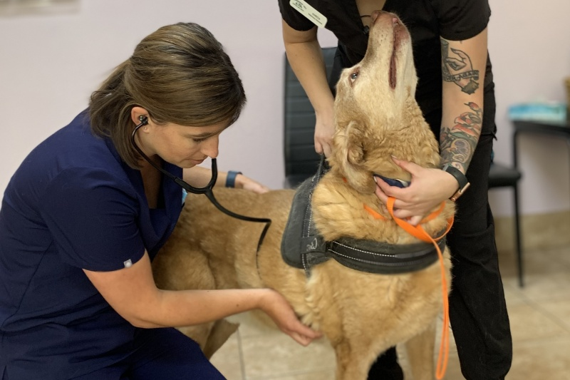

Animal Welfare Programs
Protecting and improving the lives of animals around the world.

Animal Rescue Operations
Rescuing injured, abandoned, or neglected animals and providing them with shelter and care.

Donate Now
Wildlife Conservation
Working to preserve endangered species and protect their natural habitats through conservation programs.

Donate Now
Veterinary Care for Strays
Providing free veterinary services for stray animals, including vaccinations, spaying and neutering.
Help Us Protect Animals
Join us in our mission to save and care for animals in need. Find out how you can contribute today!